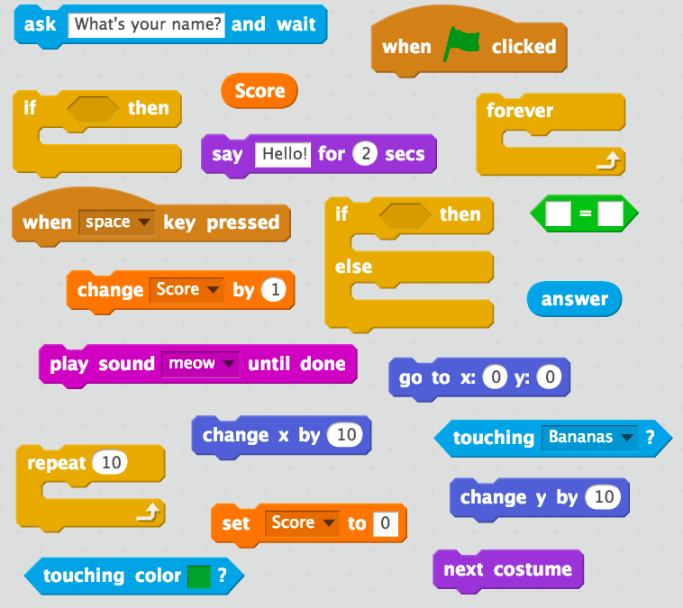

| How do we address the fact that programming is “hard and time-consuming”? How do we transform “hard and time-consuming” into “accessible and fast”? The answer lies in block-based and visual programming. Block-based coding or programming utilises a drag-and-drop learning environment, where programmers use coding instruction “blocks” to construct animated stories and games. All the developer has to do is connect visual “building blocks” in a logical way. This approach became predominant in introducing kids to programming and is used worldwide now. Today, over 40 million users actively use block coding with Scratch and 50 million children learn how to program with code.org |
 |